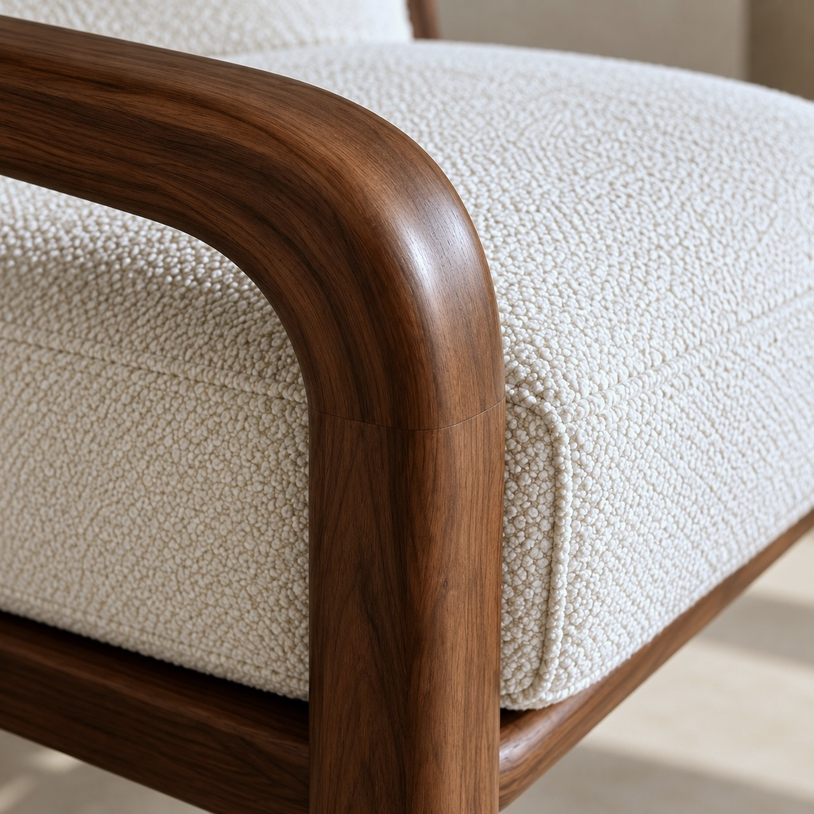

Aurea Lounge Chair
Walnut & ivory bouclé
£890
A softly inclined seat, generous cushions and a sculpted walnut frame. A quiet place to pause.
Shipping options
In a live shop, delivery methods, lead times and charges would appear here. This portfolio demonstration does not offer delivery.
Materials & care
Walnut frame and ivory bouclé cushions. To care for these materials, use a soft, dry cloth on the wood and gentle vacuuming on upholstery. Final care instructions would depend on production specifications.
Warranty & returns
This is a fictional product shown to demonstrate the shopping experience. No sales, warranty or returns policy applies.

Softness, held
in a simple frame.
The chair’s character comes from the meeting of two materials: the depth of walnut and the tactile softness of ivory upholstery.
A continuous curved arm gives the frame a gentle rhythm, while a separate seat and back cushion keep the silhouette relaxed.
Product Information
Part of the Aurea collection, the lounge chair brings together warm walnut, tactile upholstery and softly rounded joinery. Separate seat and back cushions sit within a gently reclined frame, balancing a relaxed silhouette with a clear architectural structure.
Details
- Frame
- American black walnut
- Upholstery
- Ivory bouclé
- Cushions
- Separate seat & back
- Finish
- Natural oil finish
- Collection
- Aurea / Seating
Dimensions
- Width
- 72 cm
- Depth
- 82 cm
- Height
- 73 cm